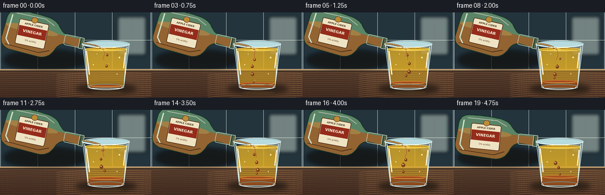
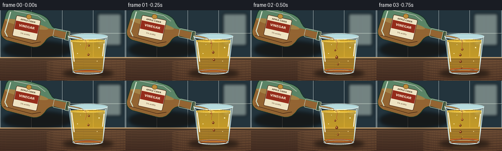

CODING AGENTS AS PIXEL WORLD MODELS
traex/GPT-5.6-Sol · phygen_140
点击播放 · 原生 RGB 像素
逐轮保存的候选
回放视频、检查图与代码变化。
每份候选均可单独播放。实际图片检查记录在下方工具轨迹中。
候选 01播放与检查图
点击播放 · 原生 RGB 像素


展开代码变化
--- 上一保存版本
+++ 本次保存版本
@@ -0,0 +1,263 @@
+from pathlib import Path
+import math
+import numpy as np
+from PIL import Image, ImageDraw, ImageFont, ImageFilter
+import artifact_io
+
+# Deterministic, supersampled vector-style rendering.
+W, H, N, FPS = 256, 144, 20, 4.0
+S = 4
+WS, HS = W*S, H*S
+HERE = Path(__file__).resolve().parent
+FONT_BOLD = "/usr/share/fonts/truetype/dejavu/DejaVuSans-Bold.ttf"
+FONT_REG = "/usr/share/fonts/truetype/dejavu/DejaVuSans.ttf"
+
+def sc(v): return int(round(v*S))
+def box(b): return tuple(sc(v) for v in b)
+def pts(p): return [(sc(x), sc(y)) for x,y in p]
+def font(path, size): return ImageFont.truetype(path, sc(size))
+
+def cubic(p0,p1,p2,p3,n=20):
+ out=[]
+ for u in np.linspace(0,1,n,endpoint=False):
+ v=1-u
+ out.append((v**3*p0[0]+3*v*v*u*p1[0]+3*v*u*u*p2[0]+u**3*p3[0],
+ v**3*p0[1]+3*v*v*u*p1[1]+3*v*u*u*p2[1]+u**3*p3[1]))
+ return out
+
+def background():
+ # Muted modern kitchen, deliberately soft so foreground liquids read clearly.
+ yy = np.linspace(0,1,HS)[:,None,None]
+ top=np.array([42,57,65.],float); bottom=np.array([107,107,97.],float)
+ a=np.clip(yy/(98/H),0,1)
+ arr=np.tile(top*(1-a)+bottom*a,(1,WS,1))
+ img=Image.fromarray(np.uint8(np.clip(arr,0,255)), 'RGB').convert('RGBA')
+ d=ImageDraw.Draw(img,'RGBA')
+ # backsplash tiles and under-cabinet glow
+ d.rectangle(box((0,0,256,97)), fill=(35,52,61,35))
+ for x in [1,64,127,190,255]:
+ d.line(pts([(x,0),(x,97)]), fill=(191,205,204,23), width=sc(.7))
+ d.line(pts([(x+1,0),(x+1,97)]), fill=(13,25,32,20), width=sc(.5))
+ for y in [47,96]:
+ d.line(pts([(0,y),(256,y)]), fill=(201,211,204,28), width=sc(.8))
+ d.line(pts([(0,y+1),(256,y+1)]), fill=(17,28,33,24), width=sc(.6))
+ # blurry window-like light patch
+ glow=Image.new('RGBA',(WS,HS),(0,0,0,0)); gd=ImageDraw.Draw(glow,'RGBA')
+ gd.rounded_rectangle(box((199,7,247,72)), radius=sc(3), fill=(203,218,205,28), outline=(226,237,226,30), width=sc(1))
+ gd.line(pts([(223,8),(223,71)]), fill=(236,241,229,24), width=sc(1))
+ glow=glow.filter(ImageFilter.GaussianBlur(sc(3)))
+ img=Image.alpha_composite(img,glow)
+ d=ImageDraw.Draw(img,'RGBA')
+ # countertop and glossy back edge
+ d.rectangle(box((0,96,256,144)), fill=(74,52,39,255))
+ for y in range(sc(96),HS):
+ rel=(y/S-96)/48
+ col=(92-int(23*rel),65-int(20*rel),47-int(14*rel),255)
+ d.line([(0,y),(WS,y)],fill=col,width=1)
+ d.rectangle(box((0,96,256,98)), fill=(190,151,105,90))
+ d.line(pts([(0,99),(256,99)]), fill=(26,24,23,100), width=sc(1))
+ # subtle wood grain
+ for k in range(13):
+ y=103+k*3.4
+ d.arc(box((-30,y,110,y+9)), 190,345, fill=(38,27,22,24),width=sc(.5))
+ d.arc(box((92,y-1,290,y+10)), 195,350, fill=(172,121,72,16),width=sc(.5))
+ return img.filter(ImageFilter.GaussianBlur(sc(.32)))
+
+BASE=background()
+
+def make_bottle(theta, spout_world):
+ # Render the bottle locally, rotate, then place by its spout. This keeps the pour
+ # mechanically connected despite the subtle hand-like rocking motion.
+ lw,lh=150,84
+ im=Image.new('RGBA',(lw*S,lh*S),(0,0,0,0))
+ mask=Image.new('L',im.size,0); md=ImageDraw.Draw(mask)
+ outline=[]
+ outline += [(138,30),(115,29)]
+ outline += cubic((115,29),(106,29),(103,25),(98,19),n=10)
+ outline += cubic((98,19),(92,11),(84,8),(72,7),n=10)
+ outline += cubic((72,7),(57,5),(38,5),(24,6),n=10)
+ outline += cubic((24,6),(13,7),(8,13),(7,24),n=10)
+ outline += [(5,55)]
+ outline += cubic((5,55),(4,66),(12,73),(24,74),n=10)
+ outline += [(73,76)]
+ outline += cubic((73,76),(86,76),(94,68),(98,58),n=10)
+ outline += cubic((98,58),(101,50),(108,45),(116,45),n=10)
+ outline += [(138,47)]
+ md.polygon(pts(outline),fill=235)
+ # body glass
+ glass=Image.new('RGBA',im.size,(0,0,0,0)); gd=ImageDraw.Draw(glass,'RGBA')
+ gd.polygon(pts(outline),fill=(94,137,105,185))
+ # cider vinegar visible inside lower body and neck
+ fluid=Image.new('RGBA',im.size,(0,0,0,0)); fd=ImageDraw.Draw(fluid,'RGBA')
+ fd.rectangle(box((3,32,141,79)),fill=(167,91,32,190))
+ fd.ellipse(box((8,27,98,39)),fill=(208,125,48,150))
+ fluid.putalpha(Image.composite(fluid.getchannel('A'),Image.new('L',im.size,0),mask))
+ im=Image.alpha_composite(im,glass)
+ im=Image.alpha_composite(im,fluid)
+ dd=ImageDraw.Draw(im,'RGBA')
+ # shoulder, base and glass highlights
+ dd.line(pts(outline+[outline[0]]),fill=(23,54,37,215),width=sc(1.2),joint='curve')
+ dd.line(pts([(16,15),(13,57),(20,66)]),fill=(231,249,221,125),width=sc(2.2))
+ dd.line(pts([(22,11),(72,11),(89,19)]),fill=(238,244,212,70),width=sc(1.2))
+ dd.line(pts([(13,66),(72,69),(89,62)]),fill=(61,27,13,130),width=sc(1))
+ # neck ring / open mouth
+ dd.rounded_rectangle(box((110,29,139,47)),radius=sc(3),outline=(220,235,203,85),width=sc(1))
+ dd.rectangle(box((135.5,29,143,48)),fill=(49,77,52,220),outline=(212,225,198,125),width=sc(1))
+ dd.rectangle(box((139,31,144,46)),fill=(91,105,76,210))
+ dd.line(pts([(143,31),(144,46)]),fill=(237,244,221,160),width=sc(.8))
+ # paper label, highly legible at final scale
+ dd.rounded_rectangle(box((29,19,80,62)),radius=sc(3),fill=(239,229,195,244),outline=(84,47,28,230),width=sc(1.1))
+ dd.rectangle(box((30.5,30,78.5,47)),fill=(151,45,27,245))
+ f1=font(FONT_BOLD,6.5); f2=font(FONT_BOLD,4.2); f3=font(FONT_REG,3.7)
+ text='VINEGAR'; tb=dd.textbbox((0,0),text,font=f1); tw=tb[2]-tb[0]
+ dd.text((sc(54.5)-tw//2,sc(34)),text,font=f1,fill=(255,247,218,255),stroke_width=0)
+ text2='APPLE CIDER'; tb=dd.textbbox((0,0),text2,font=f2); tw=tb[2]-tb[0]
+ dd.text((sc(54.5)-tw//2,sc(23)),text2,font=f2,fill=(78,55,32,255))
+ text3='5% acidity'; tb=dd.textbbox((0,0),text3,font=f3); tw=tb[2]-tb[0]
+ dd.text((sc(54.5)-tw//2,sc(51)),text3,font=f3,fill=(90,57,34,230))
+ dd.ellipse(box((49,12,60,22)),fill=(194,143,57,210),outline=(104,64,25,200),width=sc(.7))
+ # rotate clockwise in image coordinates (Pillow's positive angle is CCW)
+ rot=im.rotate(-theta,resample=Image.Resampling.BICUBIC,expand=True)
+ marker=Image.new('L',im.size,0); mm=ImageDraw.Draw(marker)
+ mm.ellipse(box((141,37,143,39)),fill=255)
+ mr=marker.rotate(-theta,resample=Image.Resampling.BICUBIC,expand=True)
+ ar=np.asarray(mr,dtype=float); ys,xs=np.nonzero(ar>20); weights=ar[ys,xs]
+ mx=float((xs*weights).sum()/weights.sum()); my=float((ys*weights).sum()/weights.sum())
+ paste=(int(round(spout_world[0]*S-mx)),int(round(spout_world[1]*S-my)))
+ return rot,paste
+
+def glass_inner_polygon():
+ return [(142.5,54),(215.5,54),(209.2,123.5),(205,127),(153,127),(148.5,123.5)]
+
+def render_frame(i):
+ t=i/FPS
+ img=BASE.copy()
+ # Contact shadows anchor both transparent objects.
+ sh=Image.new('RGBA',(WS,HS),(0,0,0,0)); sd=ImageDraw.Draw(sh,'RGBA')
+ sd.ellipse(box((128,120,231,138)),fill=(8,8,7,120))
+ sd.ellipse(box((8,65,146,96)),fill=(16,12,8,55))
+ sh=sh.filter(ImageFilter.GaussianBlur(sc(4)))
+ img=Image.alpha_composite(img,sh)
+
+ # Bottle rocks almost imperceptibly while pouring, then eases back at the end.
+ pour_strength=max(0.0,min(1.0,(4.75-t)/0.72))
+ if t<.35: pour_strength=.72+.28*t/.35
+ theta=12.0+1.3*math.sin(t*1.15)
+ if t>3.8: theta-=5.2*((t-3.8)/.95)**2
+ spout=(140.2+0.25*math.sin(t*1.7),52.0+0.35*math.sin(t*1.35))
+ bottle,paste=make_bottle(theta,spout)
+ img.alpha_composite(bottle,dest=paste)
+
+ # Glass rear rim and silhouette.
+ gd=ImageDraw.Draw(img,'RGBA')
+ gd.ellipse(box((138.5,47.5,219.5,59.5)),fill=(183,219,222,22),outline=(221,244,242,115),width=sc(1.2))
+ gd.line(pts([(139.5,53),(148.5,124)]),fill=(188,229,230,85),width=sc(1.05))
+ gd.line(pts([(218.5,53),(209.5,124)]),fill=(218,242,239,95),width=sc(1.1))
+
+ # Oil volume, clipped to the tumbler. Slight vertical gradient gives optical depth.
+ oilmask=Image.new('L',(WS,HS),0); omd=ImageDraw.Draw(oilmask)
+ oy=62.0+0.30*math.sin(t*4.1)
+ omd.polygon(pts([(143,oy),(215,oy),(209.2,123.6),(205,127),(153,127),(148.7,123.5)]),fill=255)
+ omd.ellipse(box((143,oy-3.0,215,oy+3.2)),fill=255)
+ oil=np.zeros((HS,WS,4),dtype=np.uint8)
+ for yy in range(max(0,sc(oy-3)),min(HS,sc(128))):
+ r=(yy/S-oy)/(128-oy)
+ oil[yy,:,0]=int(218+15*r); oil[yy,:,1]=int(170+8*r); oil[yy,:,2]=int(43-14*r); oil[yy,:,3]=int(92+33*r)
+ oilim=Image.fromarray(oil,'RGBA'); oilim.putalpha(Image.fromarray((np.asarray(oilmask,dtype=np.float32)*np.asarray(oilim.getchannel('A'),dtype=np.float32)/255).astype(np.uint8)))
+ img=Image.alpha_composite(img,oilim)
+ d=ImageDraw.Draw(img,'RGBA')
+ d.ellipse(box((143,oy-2.9,215,oy+3.3)),fill=(232,189,54,70),outline=(255,222,111,150),width=sc(.85))
+ d.arc(box((146,oy-1.4,212,oy+2.5)),185,352,fill=(111,71,20,100),width=sc(.65))
+
+ # Collected vinegar: the denser, immiscible phase grows steadily along the bottom.
+ depth=1.5+12.2*(1-math.exp(-(t+.18)/2.1))
+ if t>4.0: depth += .7*(t-4.0)
+ layer_top=126.0-depth
+ vm=Image.new('L',(WS,HS),0); vmd=ImageDraw.Draw(vm)
+ vmd.polygon(pts([(150,layer_top),(208,layer_top),(209.2,123.7),(205,127),(153,127),(149,123.7)]),fill=255)
+ vmd.ellipse(box((150,layer_top-2.2,208,layer_top+2.5)),fill=255)
+ vin=Image.new('RGBA',(WS,HS),(145,67,28,0)); vin.putalpha(vm.point(lambda a:int(a*.78)))
+ img=Image.alpha_composite(img,vin)
+ d=ImageDraw.Draw(img,'RGBA')
+ d.ellipse(box((150,layer_top-2.2,208,layer_top+2.6)),fill=(165,78,30,110),outline=(226,136,54,175),width=sc(.75))
+ d.arc(box((153,layer_top-.5,206,layer_top+2.6)),5,175,fill=(255,191,91,105),width=sc(.65))
+
+ # Vinegar beads descend through oil rather than mixing: staggered deterministic paths.
+ for k in range(16):
+ spawn=-.38+k*.31
+ dur=1.15+.22*((k*7)%5)/4
+ p=(t-spawn)/dur
+ if 0 < p < 1:
+ y=oy+3+(layer_top-oy-4)*(p**.72)
+ x=176.5+4.5*math.sin(k*1.83+p*3.7)-2.0*p+0.9*math.sin(t*3+k)
+ rad=1.35+.85*((k*11)%7)/6+1.15*math.sin(math.pi*p)**2
+ # teardrop shape with warm refracted edge
+ poly=[(x,y-rad*1.45),(x-rad*.92,y-rad*.18),(x-rad*.65,y+rad*.83),(x,y+rad*1.05),(x+rad*.72,y+rad*.72),(x+rad*.88,y-rad*.15)]
+ d.polygon(pts(poly),fill=(133,62,27,184))
+ d.ellipse(box((x-rad*.45,y-rad*.70,x+rad*.18,y-rad*.10)),fill=(255,190,100,145))
+ d.arc(box((x-rad,y-rad,x+rad,y+rad)),275,80,fill=(78,45,22,150),width=sc(.55))
+ # tiny satellite droplet emphasizes breakup in the oil
+ if k%3==0 and p>.28:
+ rr=.58+.15*(k%2); xx=x+rad+1.0; yy2=y-2.4-rad
+ d.ellipse(box((xx-rr,yy2-rr,xx+rr,yy2+rr)),fill=(166,80,32,165),outline=(242,173,84,100),width=sc(.4))
+
+ # A short twisting tendril below the impact, visible as vinegar enters the oil.
+ if pour_strength>.12:
+ wig=math.sin(t*6.0)*1.0
+ path=[]
+ for q in np.linspace(0,1,22):
+ path.append((175.2+wig*q+1.8*math.sin(q*5+t*3)*q,oy+1+17*q))
+ d.line(pts(path),fill=(151,74,30,int(118*pour_strength)),width=max(1,sc(1.35*pour_strength)),joint='curve')
+ d.line(pts([(path[j][0]-.45,path[j][1]) for j in range(len(path))]),fill=(248,178,86,int(90*pour_strength)),width=max(1,sc(.45)))
+
+ # External stream follows a gentle arc from the mouth to the oil surface.
+ if pour_strength>.06:
+ p0=(spout[0]+.4,spout[1]); p1=(148.5,53.0); p2=(165.5,55.5); p3=(175.1,oy+.2)
+ curve=[]
+ for u in np.linspace(0,1,35):
+ v=1-u
+ x=v**3*p0[0]+3*v*v*u*p1[0]+3*v*u*u*p2[0]+u**3*p3[0]
+ y=v**3*p0[1]+3*v*v*u*p1[1]+3*v*u*u*p2[1]+u**3*p3[1]
+ x+=.28*math.sin(t*9+u*5)*u
+ curve.append((x,y))
+ if pour_strength>.27:
+ d.line(pts(curve),fill=(112,66,27,int(205*pour_strength)),width=max(1,sc(3.0*pour_strength)),joint='curve')
+ d.line(pts([(x-.45,y-.22) for x,y in curve]),fill=(255,210,127,int(218*pour_strength)),width=max(1,sc(1.05*pour_strength)),joint='curve')
+ else:
+ # final separated beads as the pour stops
+ for u in (.15,.42,.70,.91):
+ idx=int(u*(len(curve)-1)); x,y=curve[idx]; rr=.65+pour_strength*1.5
+ d.ellipse(box((x-rr,y-rr*1.5,x+rr,y+rr*1.5)),fill=(191,119,49,int(220*pour_strength/.27)))
+ d.ellipse(box((169.2,oy-1.3,181.3,oy+2.3)),outline=(255,222,125,int(150*pour_strength)),width=sc(.65))
+
+ # A few stable air bubbles in the oil make transparency and depth unmistakable.
+ for bx,by,br in [(202,76,1.25),(158,88,.85),(198,104,.72),(164,70,.58)]:
+ drift=.35*math.sin(t*1.1+bx)
+ d.ellipse(box((bx-br,by+drift-br,bx+br,by+drift+br)),fill=(255,230,143,38),outline=(255,242,189,120),width=sc(.45))
+
+ # Foreground glass optics: base, front rim, refraction strips and speculars.
+ d.arc(box((148,120.5,210,131)),0,180,fill=(232,248,244,155),width=sc(1.25))
+ d.arc(box((148,121,210,130.5)),180,360,fill=(107,153,153,115),width=sc(1))
+ d.line(pts([(148.6,123.5),(153,128),(205,128),(209.4,123.5)]),fill=(221,242,239,125),width=sc(1.1))
+ d.line(pts([(143,58),(149,121)]),fill=(239,255,250,125),width=sc(1.15))
+ d.line(pts([(146,65),(151,105)]),fill=(255,255,241,70),width=sc(2.1))
+ d.line(pts([(215,58),(210,120)]),fill=(220,246,244,145),width=sc(1.2))
+ d.line(pts([(212,68),(209,94)]),fill=(255,255,246,82),width=sc(1.8))
+ d.arc(box((138.5,47.5,219.5,59.5)),0,180,fill=(245,255,251,205),width=sc(1.25))
+ d.arc(box((139.5,48.5,218.5,58.7)),180,360,fill=(119,170,175,135),width=sc(.8))
+ # Soft counter reflection below the glass
+ refl=Image.new('RGBA',(WS,HS),(0,0,0,0)); rd=ImageDraw.Draw(refl,'RGBA')
+ rd.ellipse(box((151,131,211,140)),fill=(231,175,74,22))
+ refl=refl.filter(ImageFilter.GaussianBlur(sc(2)))
+ img=Image.alpha_composite(img,refl)
+
+ out=img.convert('RGB').resize((W,H),Image.Resampling.LANCZOS)
+ return np.asarray(out,dtype=np.uint8)
+
+def main():
+ frames=np.stack([render_frame(i) for i in range(N)],axis=0)
+ artifact_io.save(frames,HERE)
+ print('saved',frames.shape,frames.dtype,'range',int(frames.min()),int(frames.max()))
+
+if __name__=='__main__':
+ main()
可观测工具轨迹
实际执行的命令与返回图片。
命令 1exit 0
/bin/bash -lc "cat prompt.txt && printf '\\n--- GENERATION_RULES.md ---\\n' && cat GENERATION_RULES.md"
命令 2exit 0
/bin/bash -lc "cat task_spec.json && printf '\\n--- FILES ---\\n' && find . -maxdepth 2 -type f -printf '%p\\n' | sort"
命令 3exit 0
/bin/bash -lc "command -v ffmpeg; command -v blender; command -v python3; python3 - <<'PY' mods=['PIL','cv2','numpy','imageio','matplotlib'] for m in mods: try: x=__import__(m); print(m,'ok',getattr(x,'__version__','')) except Exception as e: print(m,'NO',e) PY"
命令 4exit 0
/bin/bash -lc 'cat artifact_io.py'
命令 5exit 0
/bin/bash -lc "cat > generate.py <<'PY'
from pathlib import Path
import math
import numpy as np
from PIL import Image, ImageDraw, ImageFont, ImageFilter
import artifact_io
# Deterministic, supersampled vector-style rendering.
W, H, N, FPS = 256, 144, 20, 4.0
S = 4
WS, HS = W*S, H*S
HERE = Path(__file__).resolve().parent
FONT_BOLD = \"/usr/share/fonts/truetype/dejavu/DejaVuSans-Bold.ttf\"
FONT_REG = \"/usr/share/fonts/truetype/dejavu/DejaVuSans.ttf\"
def sc(v): return int(round(v*S))
def box(b): return tuple(sc(v) for v in b)
def pts(p): return [(sc(x), sc(y)) for x,y in p]
def font(path, size): return ImageFont.truetype(path, sc(size))
def cubic(p0,p1,p2,p3,n=20):
out=[]
for u in np.linspace(0,1,n,endpoint=False):
v=1-u
out.append((v**3*p0[0]+3*v*v*u*p1[0]+3*v*u*u*p2[0]+u**3*p3[0],
v**3*p0[1]+3*v*v*u*p1[1]+3*v*u*u*p2[1]+u**3*p3[1]))
return out
def background():
# Muted modern kitchen, deliberately soft so foreground liquids read clearly.
yy = np.linspace(0,1,HS)[:,None,None]
top=np.array([42,57,65.],float); bottom=np.array([107,107,97.],float)
a=np.clip(yy/(98/H),0,1)
arr=np.tile(top*(1-a)+bottom*a,(1,WS,1))
img=Image.fromarray(np.uint8(np.clip(arr,0,255)), 'RGB').convert('RGBA')
d=ImageDraw.Draw(img,'RGBA')
# backsplash tiles and under-cabinet glow
d.rectangle(box((0,0,256,97)), fill=(35,52,61,35))
for x in [1,64,127,190,255]:
d.line(pts([(x,0),(x,97)]), fill=(191,205,204,23), width=sc(.7))
d.line(pts([(x+1,0),(x+1,97)]), fill=(13,25,32,20), width=sc(.5))
for y in [47,96]:
d.line(pts([(0,y),(256,y)]), fill=(201,211,204,28), width=sc(.8))
d.line(pts([(0,y+1),(256,y+1)]), fill=(17,28,33,24), width=sc(.6))
# blurry window-like light patch
glow=Image.new('RGBA',(WS,HS),(0,0,0,0)); gd=ImageDraw.Draw(glow,'RGBA')
gd.rounded_rectangle(box((199,7,247,72)), radius=sc(3), fill=(203,218,205,28), outline=(226,237,226,30), width=sc(1))
gd.line(pts([(223,8),(223,71)]), fill=(236,241,229,24), width=sc(1))
glow=glow.filter(ImageFilter.GaussianBlur(sc(3)))
img=Image.alpha_composite(img,glow)
d=ImageDraw.Draw(img,'RGBA')
# countertop and glossy back edge
d.rectangle(box((0,96,256,144)), fill=(74,52,39,255))
for y in range(sc(96),HS):
rel=(y/S-96)/48
col=(92-int(23*rel),65-int(20*rel),47-int(14*rel),255)
d.line([(0,y),(WS,y)],fill=col,width=1)
d.rectangle(box((0,96,256,98)), fill=(190,151,105,90))
d.line(pts([(0,99),(256,99)]), fill=(26,24,23,100), width=sc(1))
# subtle wood grain
for k in range(13):
y=103+k*3.4
d.arc(box((-30,y,110,y+9)), 190,345, fill=(38,27,22,24),width=sc(.5))
d.arc(box((92,y-1,290,y+10)), 195,350, fill=(172,121,72,16),width=sc(.5))
return img.filter(ImageFilter.GaussianBlur(sc(.32)))
BASE=background()
def make_bottle(theta, spout_world):
# Render the bottle locally, rotate, then place by its spout. This keeps the pour
# mechanically connected despite the subtle hand-like rocking motion.
lw,lh=150,84
im=Image.new('RGBA',(lw*S,lh*S),(0,0,0,0))
mask=Image.new('L',im.size,0); md=ImageDraw.Draw(mask)
outline=[]
outline += [(138,30),(115,29)]
outline += cubic((115,29),(106,29),(103,25),(98,19),n=10)
outline += cubic((98,19),(92,11),(84,8),(72,7),n=10)
outline += cubic((72,7),(57,5),(38,5),(24,6),n=10)
outline += cubic((24,6),(13,7),(8,13),(7,24),n=10)
outline += [(5,55)]
outline += cubic((5,55),(4,66),(12,73),(24,74),n=10)
outline += [(73,76)]
outline += cubic((73,76),(86,76),(94,68),(98,58),n=10)
outline += cubic((98,58),(101,50),(108,45),(116,45),n=10)
outline += [(138,47)]
md.polygon(pts(outline),fill=235)
# body glass
glass=Image.new('RGBA',im.size,(0,0,0,0)); gd=ImageDraw.Draw(glass,'RGBA')
gd.polygon(pts(outline),fill=(94,137,105,185))
# cider vinegar visible inside lower body and neck
fluid=Image.new('RGBA',im.size,(0,0,0,0)); fd=ImageDraw.Draw(fluid,'RGBA')
fd.rectangle(box((3,32,141,79)),fill=(167,91,32,190))
fd.ellipse(box((8,27,98,39)),fill=(208,125,48,150))
fluid.putalpha(Image.composite(fluid.getchannel('A'),Image.new('L',im.size,0),mask))
im=Image.alpha_composite(im,glass)
im=Image.alpha_composite(im,fluid)
dd=ImageDraw.Draw(im,'RGBA')
# shoulder, base and glass highlights
dd.line(pts(outline+[outline[0]]),fill=(23,54,37,215),width=sc(1.2),joint='curve')
dd.line(pts([(16,15),(13,57),(20,66)]),fill=(231,249,221,125),width=sc(2.2))
dd.line(pts([(22,11),(72,11),(89,19)]),fill=(238,244,212,70),width=sc(1.2))
dd.line(pts([(13,66),(72,69),(89,62)]),fill=(61,27,13,130),width=sc(1))
# neck ring / open mouth
dd.rounded_rectangle(box((110,29,139,47)),radius=sc(3),outline=(220,235,203,85),width=sc(1))
dd.rectangle(box((135.5,29,143,48)),fill=(49,77,52,220),outline=(212,225,198,125),width=sc(1))
dd.rectangle(box((139,31,144,46)),fill=(91,105,76,210))
dd.line(pts([(143,31),(144,46)]),fill=(237,244,221,160),width=sc(.8))
# paper label, highly legible at final scale
dd.rounded_rectangle(box((29,19,80,62)),radius=sc(3),fill=(239,229,195,244),outline=(84,47,28,230),width=sc(1.1))
dd.rectangle(box((30.5,30,78.5,47)),fill=(151,45,27,245))
f1=font(FONT_BOLD,6.5); f2=font(FONT_BOLD,4.2); f3=font(FONT_REG,3.7)
text='VINEGAR'; tb=dd.textbbox((0,0),text,font=f1); tw=tb[2]-tb[0]
dd.text((sc(54.5)-tw//2,sc(34)),text,font=f1,fill=(255,247,218,255),stroke_width=0)
text2='APPLE CIDER'; tb=dd.textbbox((0,0),text2,font=f2); tw=tb[2]-tb[0]
dd.text((sc(54.5)-tw//2,sc(23)),text2,font=f2,fill=(78,55,32,255))
text3='5% acidity'; tb=dd.textbbox((0,0),text3,font=f3); tw=tb[2]-tb[0]
dd.text((sc(54.5)-tw//2,sc(51)),text3,font=f3,fill=(90,57,34,230))
dd.ellipse(box((49,12,60,22)),fill=(194,143,57,210),outline=(104,64,25,200),width=sc(.7))
# rotate clockwise in image coordinates (Pillow's positive angle is CCW)
rot=im.rotate(-theta,resample=Image.Resampling.BICUBIC,expand=True)
marker=Image.new('L',im.size,0); mm=ImageDraw.Draw(marker)
mm.ellipse(box((141,37,143,39)),fill=255)
mr=marker.rotate(-theta,resample=Image.Resampling.BICUBIC,expand=True)
ar=np.asarray(mr,dtype=float); ys,xs=np.nonzero(ar>20); weights=ar[ys,xs]
mx=float((xs*weights).sum()/weights.sum()); my=float((ys*weights).sum()/weights.sum())
paste=(int(round(spout_world[0]*S-mx)),int(round(spout_world[1]*S-my)))
return rot,paste
def glass_inner_polygon():
return [(142.5,54),(215.5,54),(209.2,123.5),(205,127),(153,127),(148.5,123.5)]
def render_frame(i):
t=i/FPS
img=BASE.copy()
# Contact shadows anchor both transparent objects.
sh=Image.new('RGBA',(WS,HS),(0,0,0,0)); sd=ImageDraw.Draw(sh,'RGBA')
sd.ellipse(box((128,120,231,138)),fill=(8,8,7,120))
sd.ellipse(box((8,65,146,96)),fill=(16,12,8,55))
sh=sh.filter(ImageFilter.GaussianBlur(sc(4)))
img=Image.alpha_composite(img,sh)
# Bottle rocks almost imperceptibly while pouring, then eases back at the end.
pour_strength=max(0.0,min(1.0,(4.75-t)/0.72))
if t<.35: pour_strength=.72+.28*t/.35
theta=12.0+1.3*math.sin(t*1.15)
if t>3.8: theta-=5.2*((t-3.8)/.95)**2
spout=(140.2+0.25*math.sin(t*1.7),52.0+0.35*math.sin(t*1.35))
bottle,paste=make_bottle(theta,spout)
img.alpha_composite(bottle,dest=paste)
# Glass rear rim and silhouette.
gd=ImageDraw.Draw(img,'RGBA')
gd.ellipse(box((138.5,47.5,219.5,59.5)),fill=(183,219,222,22),outline=(221,244,242,115),width=sc(1.2))
gd.line(pts([(139.5,53),(148.5,124)]),fill=(188,229,230,85),width=sc(1.05))
gd.line(pts([(218.5,53),(209.5,124)]),fill=(218,242,239,95),width=sc(1.1))
# Oil volume, clipped to the tumbler. Slight vertical gradient gives optical depth.
oilmask=Image.new('L',(WS,HS),0); omd=ImageDraw.Draw(oilmask)
oy=62.0+0.30*math.sin(t*4.1)
omd.polygon(pts([(143,oy),(215,oy),(209.2,123.6),(205,127),(153,127),(148.7,123.5)]),fill=255)
omd.ellipse(box((143,oy-3.0,215,oy+3.2)),fill=255)
oil=np.zeros((HS,WS,4),dtype=np.uint8)
for yy in range(max(0,sc(oy-3)),min(HS,sc(128))):
r=(yy/S-oy)/(128-oy)
oil[yy,:,0]=int(218+15*r); oil[yy,:,1]=int(170+8*r); oil[yy,:,2]=int(43-14*r); oil[yy,:,3]=int(92+33*r)
oilim=Image.fromarray(oil,'RGBA'); oilim.putalpha(Image.fromarray((np.asarray(oilmask,dtype=np.float32)*np.asarray(oilim.getchannel('A'),dtype=np.float32)/255).astype(np.uint8)))
img=Image.alpha_composite(img,oilim)
d=ImageDraw.Draw(img,'RGBA')
d.ellipse(box((143,oy-2.9,215,oy+3.3)),fill=(232,189,54,70),outline=(255,222,111,150),width=sc(.85))
d.arc(box((146,oy-1.4,212,oy+2.5)),185,352,fill=(111,71,20,100),width=sc(.65))
# Collected vinegar: the denser, immiscible phase grows steadily along the bottom.
depth=1.5+12.2*(1-math.exp(-(t+.18)/2.1))
if t>4.0: depth += .7*(t-4.0)
layer_top=126.0-depth
vm=Image.new('L',(WS,HS),0); vmd=ImageDraw.Draw(vm)
vmd.polygon(pts([(150,layer_top),(208,layer_top),(209.2,123.7),(205,127),(153,127),(149,123.7)]),fill=255)
vmd.ellipse(box((150,layer_top-2.2,208,layer_top+2.5)),fill=255)
vin=Image.new('RGBA',(WS,HS),(145,67,28,0)); vin.putalpha(vm.point(lambda a:int(a*.78)))
img=Image.alpha_composite(img,vin)
d=ImageDraw.Draw(img,'RGBA')
d.ellipse(box((150,layer_top-2.2,208,layer_top+2.6)),fill=(165,78,30,110),outline=(226,136,54,175),width=sc(.75))
d.arc(box((153,layer_top-.5,206,layer_top+2.6)),5,175,fill=(255,191,91,105),width=sc(.65))
# Vinegar beads descend through oil rather than mixing: staggered deterministic paths.
for k in range(16):
spawn=-.38+k*.31
dur=1.15+.22*((k*7)%5)/4
p=(t-spawn)/dur
if 0 < p < 1:
y=oy+3+(layer_top-oy-4)*(p**.72)
x=176.5+4.5*math.sin(k*1.83+p*3.7)-2.0*p+0.9*math.sin(t*3+k)
rad=1.35+.85*((k*11)%7)/6+1.15*math.sin(math.pi*p)**2
# teardrop shape with warm refracted edge
poly=[(x,y-rad*1.45),(x-rad*.92,y-rad*.18),(x-rad*.65,y+rad*.83),(x,y+rad*1.05),(x+rad*.72,y+rad*.72),(x+rad*.88,y-rad*.15)]
d.polygon(pts(poly),fill=(133,62,27,184))
d.ellipse(box((x-rad*.45,y-rad*.70,x+rad*.18,y-rad*.10)),fill=(255,190,100,145))
d.arc(box((x-rad,y-rad,x+rad,y+rad)),275,80,fill=(78,45,22,150),width=sc(.55))
# tiny satellite droplet emphasizes breakup in the oil
if k%3==0 and p>.28:
rr=.58+.15*(k%2); xx=x+rad+1.0; yy2=y-2.4-rad
d.ellipse(box((xx-rr,yy2-rr,xx+rr,yy2+rr)),fill=(166,80,32,165),outline=(242,173,84,100),width=sc(.4))
# A short twisting tendril below the impact, visible as vinegar enters the oil.
if pour_strength>.12:
wig=math.sin(t*6.0)*1.0
path=[]
for q in np.linspace(0,1,22):
path.append((175.2+wig*q+1.8*math.sin(q*5+t*3)*q,oy+1+17*q))
d.line(pts(path),fill=(151,74,30,int(118*pour_strength)),width=max(1,sc(1.35*pour_strength)),joint='curve')
d.line(pts([(path[j][0]-.45,path[j][1]) for j in range(len(path))]),fill=(248,178,86,int(90*pour_strength)),width=max(1,sc(.45)))
# External stream follows a gentle arc from the mouth to the oil surface.
if pour_strength>.06:
p0=(spout[0]+.4,spout[1]); p1=(148.5,53.0); p2=(165.5,55.5); p3=(175.1,oy+.2)
curve=[]
for u in np.linspace(0,1,35):
v=1-u
x=v**3*p0[0]+3*v*v*u*p1[0]+3*v*u*u*p2[0]+u**3*p3[0]
y=v**3*p0[1]+3*v*v*u*p1[1]+3*v*u*u*p2[1]+u**3*p3[1]
x+=.28*math.sin(t*9+u*5)*u
curve.append((x,y))
if pour_strength>.27:
d.line(pts(curve),fill=(112,66,27,int(205*pour_strength)),width=max(1,sc(3.0*pour_strength)),joint='curve')
d.line(pts([(x-.45,y-.22) for x,y in curve]),fill=(255,210,127,int(218*pour_strength)),width=max(1,sc(1.05*pour_strength)),joint='curve')
else:
# final separated beads as the pour stops
for u in (.15,.42,.70,.91):
idx=int(u*(len(curve)-1)); x,y=curve[idx]; rr=.65+pour_strength*1.5
d.ellipse(box((x-rr,y-rr*1.5,x+rr,y+rr*1.5)),fill=(191,119,49,int(220*pour_strength/.27)))
d.ellipse(box((169.2,oy-1.3,181.3,oy+2.3)),outline=(255,222,125,int(150*pour_strength)),width=sc(.65))
# A few stable air bubbles in the oil make transparency and depth unmistakable.
for bx,by,br in [(202,76,1.25),(158,88,.85),(198,104,.72),(164,70,.58)]:
drift=.35*math.sin(t*1.1+bx)
d.ellipse(box((bx-br,by+drift-br,bx+br,by+drift+br)),fill=(255,230,143,38),outline=(255,242,189,120),width=sc(.45))
# Foreground glass optics: base, front rim, refraction strips and speculars.
d.arc(box((148,120.5,210,131)),0,180,fill=(232,248,244,155),width=sc(1.25))
d.arc(box((148,121,210,130.5)),180,360,fill=(107,153,153,115),width=sc(1))
d.line(pts([(148.6,123.5),(153,128),(205,128),(209.4,123.5)]),fill=(221,242,239,125),width=sc(1.1))
d.line(pts([(143,58),(149,121)]),fill=(239,255,250,125),width=sc(1.15))
d.line(pts([(146,65),(151,105)]),fill=(255,255,241,70),width=sc(2.1))
d.line(pts([(215,58),(210,120)]),fill=(220,246,244,145),width=sc(1.2))
d.line(pts([(212,68),(209,94)]),fill=(255,255,246,82),width=sc(1.8))
d.arc(box((138.5,47.5,219.5,59.5)),0,180,fill=(245,255,251,205),width=sc(1.25))
d.arc(box((139.5,48.5,218.5,58.7)),180,360,fill=(119,170,175,135),width=sc(.8))
# Soft counter reflection below the glass
refl=Image.new('RGBA',(WS,HS),(0,0,0,0)); rd=ImageDraw.Draw(refl,'RGBA')
rd.ellipse(box((151,131,211,140)),fill=(231,175,74,22))
refl=refl.filter(ImageFilter.GaussianBlur(sc(2)))
img=Image.alpha_composite(img,refl)
out=img.convert('RGB').resize((W,H),Image.Resampling.LANCZOS)
return np.asarray(out,dtype=np.uint8)
def main():
frames=np.stack([render_frame(i) for i in range(N)],axis=0)
artifact_io.save(frames,HERE)
print('saved',frames.shape,frames.dtype,'range',int(frames.min()),int(frames.max()))
if __name__=='__main__':
main()
PY
python3 generate.py"命令 6exit 0
/bin/bash -lc "python3 - <<'PY'
from pathlib import Path
import numpy as np
from PIL import Image
p=Path('.')
fs=sorted((p/'frames').glob('*.png'))
print('frame_files',len(fs))
a=np.stack([np.asarray(Image.open(x)) for x in fs])
print('shape/dtype',a.shape,a.dtype)
print('modes',sorted(set(Image.open(x).mode for x in fs)))
print('mean_rgb',a.mean((0,1,2)).round(2).tolist())
d=np.mean(np.abs(a[1:].astype(np.int16)-a[:-1].astype(np.int16)),axis=(1,2,3))
print('adjacent_MAE',np.round(d,3).tolist())
print('changed_pixel_fraction',np.round(np.mean(np.any(a[1:]"'!=a[:-1],axis=3),axis=(1,2)),3).tolist())
z=np.load('"'pixels.npz')['pixels']
print('pixels_tensor',z.shape,z.dtype)
for f in ['pixels.npz','inspection.png','transition_check.png','index.html','generate.py']:
q=p/f; print(f,q.stat().st_size)
PY"命令 7exit 0
/bin/bash -lc "python3 -m py_compile generate.py && grep -o '\"width\":[0-9]*,\"height\":[0-9]*,\"frames\":[0-9]*,\"fps\":[0-9.]*' index.html | head -1 && git status --short 2>/dev/null || true"
保存候选 1 份；完成命令 7 次；可验证图片返回 0 张。原始 API 响应与完整日志保留在本地。